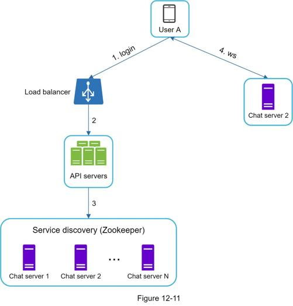
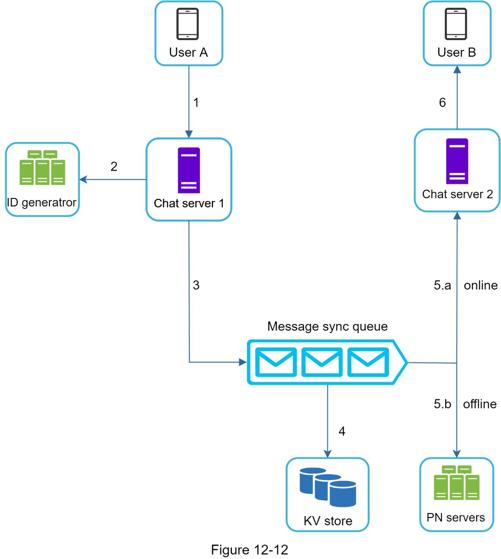
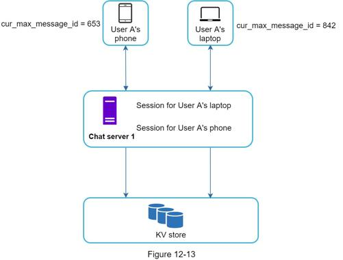
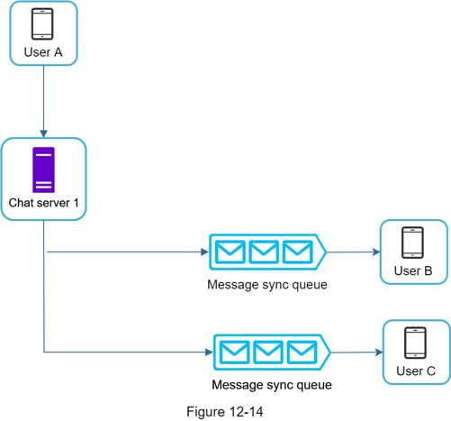
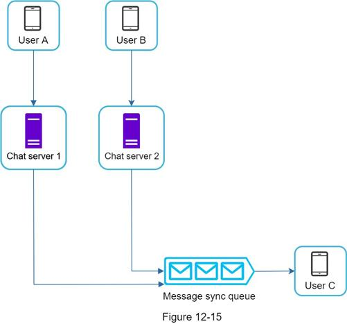
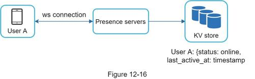
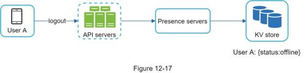
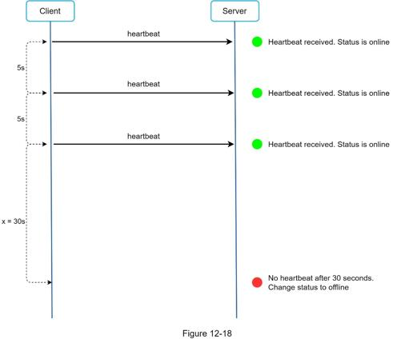
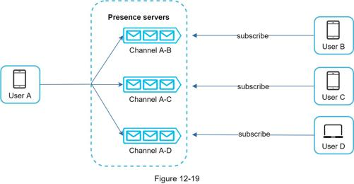

In a system design interview, usually you are expected to dive deep into some of the components in the high-level design. For the chat system, service discovery, messaging flows, and online/offline indicators worth deeper exploration.
The primary role of service discovery is to recommend the best chat server for a client based on the criteria like geographical location, server capacity, etc. Apache Zookeeper [7] is a popular open-source solution for service discovery. It registers all the available chat servers and picks the best chat server for a client based on predefined criteria.
Figure 12-11 shows how service discovery (Zookeeper) works.

1. User A tries to log in to the app.
2. The load balancer sends the login request to API servers.
3. After the backend authenticates the user, service discovery finds the best chat server for User A. In this example, server 2 is chosen and the server info is returned back to User A.
4. User A connects to chat server 2 through WebSocket.
It is interesting to understand the end-to-end flow of a chat system. In this section, we will explore 1 on 1 chat flow, message synchronization across multiple devices and group chat flow.
Figure 12-12 explains what happens when User A sends a message to User B.

1. User A sends a chat message to Chat server 1.
2. Chat server 1 obtains a message ID from the ID generator.
3. Chat server 1 sends the message to the message sync queue.
4. The message is stored in a key-value store.
5.a. If User B is online, the message is forwarded to Chat server 2 where User B is connected.
5.b. If User B is offline, a push notification is sent from push notification (PN) servers.
6. Chat server 2 forwards the message to User B. There is a persistent WebSocket connection between User B and Chat server 2.
Many users have multiple devices. We will explain how to sync messages across multiple devices. Figure 12-13 shows an example of message synchronization.

In Figure 12-13, user A has two devices: a phone and a laptop. When User A logs in to the chat app with her phone, it establishes a WebSocket connection with Chat server 1. Similarly, there is a connection between the laptop and Chat server 1.
Each device maintains a variable called cur_max_message_id, which keeps track of the latest message ID on the device. Messages that satisfy the following two conditions are considered as news messages:
•The recipient ID is equal to the currently logged-in user ID.
•Message ID in the key-value store is larger than cur_max_message_id.
With distinct cur_max_message_id on each device, message synchronization is easy as each device can get new messages from the KV store.
In comparison to the one-on-one chat, the logic of group chat is more complicated. Figures 12-14 and 12-15 explain the flow.

Figure 12-14 explains what happens when User A sends a message in a group chat. Assume there are 3 members in the group (User A, User B and user C). First, the message from User A is copied to each group member’s message sync queue: one for User B and the second for User C. You can think of the message sync queue as an inbox for a recipient. This design choice is good for small group chat because:
•it simplifies message sync flow as each client only needs to check its own inbox to get new messages.
•when the group number is small, storing a copy in each recipient’s inbox is not too expensive.
WeChat uses a similar approach, and it limits a group to 500 members [8]. However, for groups with a lot of users, storing a message copy for each member is not acceptable.
On the recipient side, a recipient can receive messages from multiple users. Each recipient has an inbox (message sync queue) which contains messages from different senders. Figure 12-15 illustrates the design.

An online presence indicator is an essential feature of many chat applications. Usually, you can see a green dot next to a user’s profile picture or username. This section explains what happens behind the scenes.
In the high-level design, presence servers are responsible for managing online status and communicating with clients through WebSocket. There are a few flows that will trigger online status change. Let us examine each of them.
The user login flow is explained in the “Service Discovery” section. After a WebSocket connection is built between the client and the real-time service, user A’s online status and last_active_at timestamp are saved in the KV store. Presence indicator shows the user is online after she logs in.

When a user logs out, it goes through the user logout flow as shown in Figure 12-17. The online status is changed to offline in the KV store. The presence indicator shows a user is offline.

We all wish our internet connection is consistent and reliable. However, that is not always the case; thus, we must address this issue in our design. When a user disconnects from the internet, the persistent connection between the client and server is lost. A naive way to handle user disconnection is to mark the user as offline and change the status to online when the connection re-establishes. However, this approach has a major flaw. It is common for users to disconnect and reconnect to the internet frequently in a short time. For example, network connections can be on and off while a user goes through a tunnel. Updating online status on every disconnect/reconnect would make the presence indicator change too often, resulting in poor user experience.
We introduce a heartbeat mechanism to solve this problem. Periodically, an online client sends a heartbeat event to presence servers. If presence servers receive a heartbeat event within a certain time, say x seconds from the client, a user is considered as online. Otherwise, it is offline.
In Figure 12-18, the client sends a heartbeat event to the server every 5 seconds. After sending 3 heartbeat events, the client is disconnected and does not reconnect within x = 30 seconds (This number is arbitrarily chosen to demonstrate the logic). The online status is changed to offline.

How do user A’s friends know about the status changes? Figure 12-19 explains how it works. Presence servers use a publish-subscribe model, in which each friend pair maintains a channel. When User A’s online status changes, it publishes the event to three channels, channel A-B, A-C, and A-D. Those three channels are subscribed by User B, C, and D, respectively. Thus, it is easy for friends to get online status updates. The communication between clients and servers is through real-time WebSocket.

The above design is effective for a small user group. For instance, WeChat uses a similar approach because its user group is capped to 500. For larger groups, informing all members about online status is expensive and time consuming. Assume a group has 100,000 members. Each status change will generate 100,000 events. To solve the performance bottleneck, a possible solution is to fetch online status only when a user enters a group or manually refreshes the friend list.